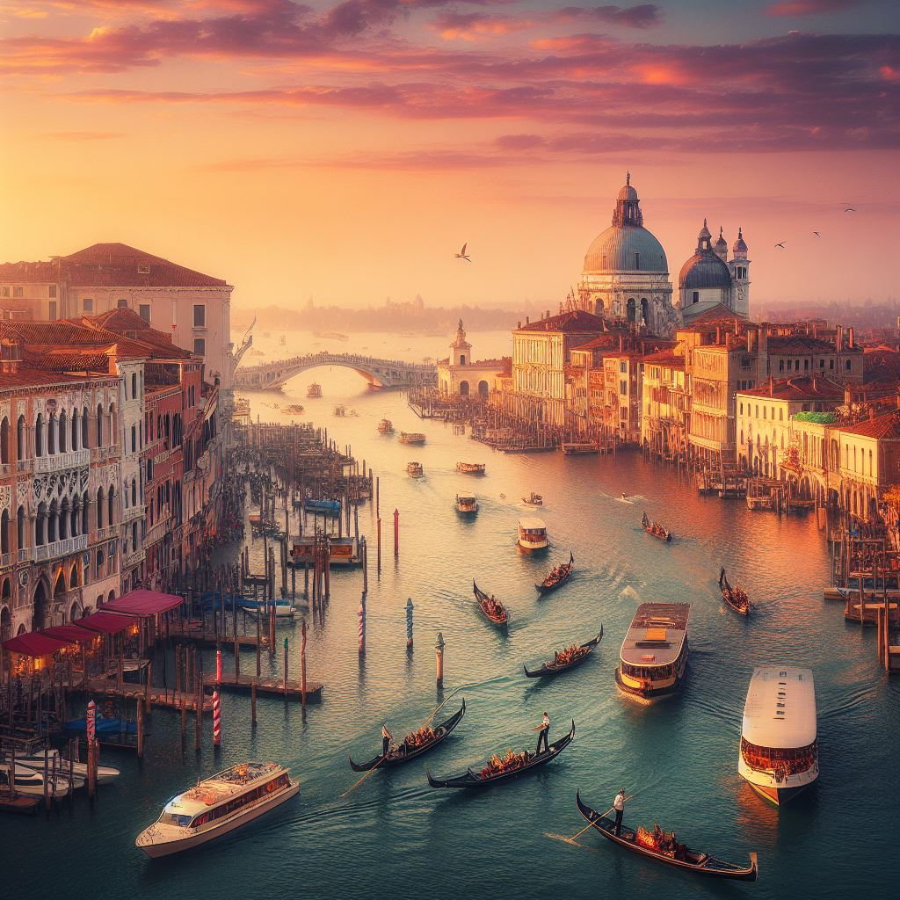

Miért látogassa meg Velencét?
Velence a világ egyik legromantikusabb és
egyedülállóbb városa, híres csatornáiról és
festői hídjairól. A város lenyűgöző történelmi
épületei, például a Szent Márk bazilika és a Dózse-palota,
káprázatos művészi és építészeti örökséget kínálnak.
Velence atmoszférája, a gondolázás és a kis utcák
sétálgatása pedig felejthetetlen élményt nyújt minden látogatónak.

Velence
Velence Olaszországban található, és a világ egyik
legromantikusabb városa. A város híres a csatornáiról,
amelyeken gondolák közlekednek, és a történelmi épületeiről,
amelyek közül a legismertebb a Szent Márk-bazilika. Velence a
turisták egyik kedvenc úti célja, és számos látnivalóval rendelkezik,
mint például a Dózse-palota, a Rialto-híd, a Canal Grande, a
Murano-sziget, a Lido strand és a Guggenheim Múzeum. A városban
számos étterem és kávézó található, ahol az olasz konyha ízeit élvezheti.
Ha Velencében jár, ne hagyja ki a gondolázást,
ahol a város szépségeit csodálhatja meg a vízen.
3 napos útiterv
1. nap:
Reggeli a Caffè Florian-ban, Velence egyik legrégebbi kávézójában,
amely 1720 óta működik. Az épület a Szent Márk tér közepén található,
és gyönyörű kilátást nyújt a Szent Márk-bazilikára és a Dózse-palotára.
Látogatás a Szent Márk-bazilikában, amely a világ egyik legismertebb
temploma. A bazilika belső tere díszes mozaikokkal és aranyozott
mennyezettel van borítva.
Séta a Canal Grande mentén, amely Velence fő vízi útvonala.
A csatorna mentén számos történelmi palota található, amelyek k
özül a legismertebb a Ca’ d’Oro.
Ebéd a Trattoria da Romano-ban, amely a Velencei-lagúna partján
található. Az étterem híres a halételeiről, és gyönyörű kilátást
nyújt a lagúnára.
2. nap:
Látogatás a Dózse-palotában, amely Velence egyik legismertebb
történelmi épülete. A palota a Szent Márk tér mellett található, és a
velencei köztársaság korábbi vezetőinek otthona volt.
Látogatás a Rialto-hídon, amely Velence legrégebbi hídja. A híd a
Canal Grande felett található, és számos bolt és étterem található rajta.
Látogatás a Murano-szigeten, amely híres a Murano üvegéről. A szigeten
számos üveggyár található, és lehetőség van az üvegkészítési folyamat
megtekintésére.
Vacsora a Osteria alle Testiere-ben, amely Velence egyik legjobb étterme.
Az étterem híres a tenger gyümölcseiből készült ételeiről.
3. nap:
Látogatás a Lido strandján, amely Velence egyik legnagyobb strandja.
A strand homokos, és lehetőség van napozásra és fürdésre.
Látogatás a Guggenheim Múzeumban, amely modern művészeti múzeum.
A múzeum a Canal Grande mentén található, és számos kiállítást
tartalmaz a 20. századi művészetből.
Vacsora a Antiche Carampane-ben, amely Velence egyik legjobb étterme.
Az étterem híres a tenger gyümölcseiből készült ételeiről.